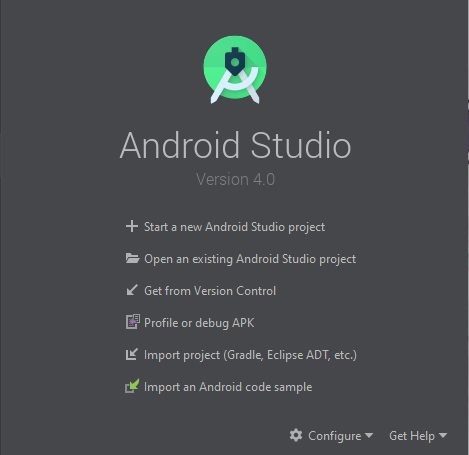
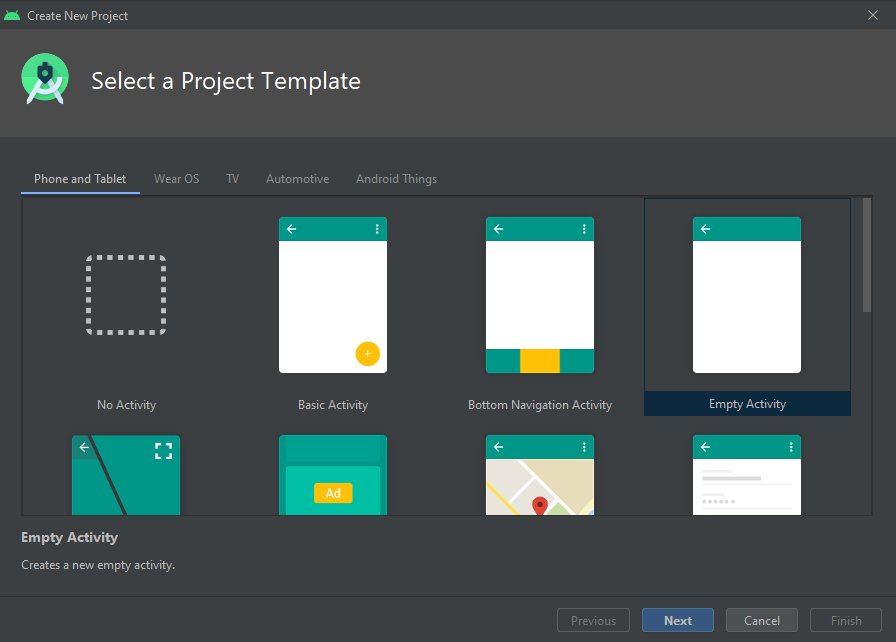
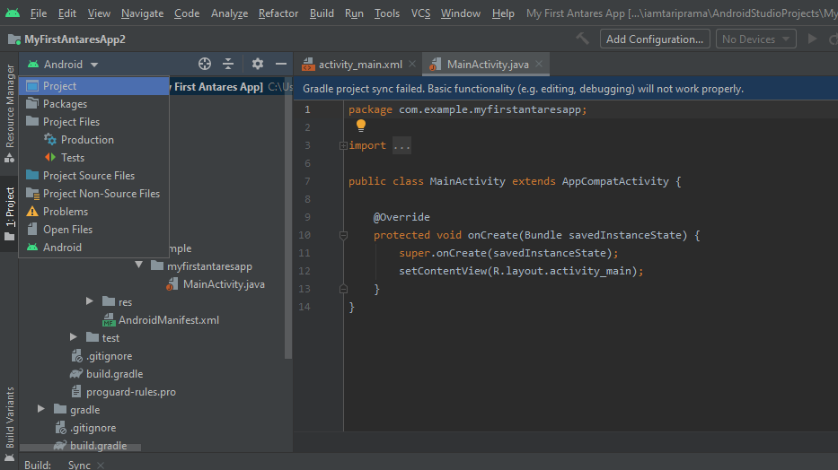

Pendahuluan
NB-IoT merupakan teknologi telekomunikasi terbaru yang dirancang secara khusus agar komunikasi antar mesin yang semakin masif dengan coverage jaringan telekomunikasi yang semakin luas dapat dilakukan secara efisien, serta penggunaan daya pada perangkat pengguna semakin hemat. Teknologi radio akses NB-IoT, yang merupakan salah satu jenis teknologi jaringan Low Power Wide Area (LPWA), memungkinkan perangkat beroperasi hingga bertahun-tahun tanpa pengisian daya ulang baterai sehingga sangat menghemat biaya. Teknologi ini juga mampu menghasilkan kapasitas koneksi yang masif untuk solusi dan aplikasi berbasis IoT.
Gambar NB-IOT Shield SIM7000C
Menghubungkan ke ANTARES
NB-IOT Shield menggunakan komunikasi serial untuk mengirim dan menerima data dari cloud melalui jaringan telekomunikasi, sehingga kita menggunakan AT-Command sebagai perintah untuk menghubungkan device dengan jaringan telekomunikasi dari suatu provider yang sudah support NB-IOT. Berikut ini source code untuk menghubungkan NB-IOT Shield ke ANTARES menggunakan Arduino IDE dan AT-Command.
A. Arduino IDE
#include "Wire.h"
#include "Adafruit_Sensor.h"
#include "Adafruit_BME280.h"
#include "SoftwareSerial.h"
#define PIN_TX 7
#define PIN_RX 8
#define PWRKEY 12
SoftwareSerial SIM7000(PIN_RX,PIN_TX);
Adafruit_BME280 bme; // I2C
char bufferRX[200];
int indexBufferRX;
bool statusKoneksi = false;
String accessKey = "YOUR-ACCESS-KEY";
float temperature,humidity,pressure;
void getSensor() {
temperature = bme.readTemperature();
pressure = bme.readPressure() / 100.0F;
humidity = bme.readHumidity();
Serial.print("Temperature = ");
Serial.print((String)temperature);
Serial.println(" *C");
Serial.print("Humidity = ");
Serial.print((String)humidity);
Serial.println(" %");
Serial.println();
}
void setup() {
Serial.begin(9600);
bool status = bme.begin(0x76);
if (!status) {
Serial.println("Could not find a valid BME280 sensor, check wiring!");
while (1);
}
initSIM7000();
}
void sendCommand(String AtCommand)
{
SIM7000.print(AtCommand+ "\r\n");
delay(500);
SIM7000.listen();
indexBufferRX =0;
while(SIM7000.available()){
bufferRX[indexBufferRX] = SIM7000.read();
indexBufferRX++;
}
SIM7000.flush();
}
void cleanBuffer(char *buffer,int count)
{
for(int i=0; i < count; i++){
buffer[i] = '\0';
}
}
int readBuffer(char *buffer, int count, unsigned int timeout=0, unsigned int chartimeout=0)
{
int i = 0;
unsigned long timerStart, prevChar;
timerStart = millis();
prevChar = 0;
while(1){
while(SIM7000.available()){
buffer[i++] = SIM7000.read();
prevChar = millis();
if(i >= count)
return i;
}
if(timeout){
if((unsigned long) (millis() - timerStart) > timeout*1000){
break;
}
}
if(((unsigned long) (millis() - prevChar) > chartimeout*10) && (prevChar != 0)){
break;
}
}
SIM7000.flush();
return i;
}
bool sendCommand(const char* cmd, const char* resp)
{
char SIMbuffer[100];
cleanBuffer(SIMbuffer,100);
SIM7000.write(cmd);
readBuffer(SIMbuffer,100,1,1);
Serial.println("====> " + (String)cmd);
// Serial.println("Response Want : " + (String)resp);
Serial.println("<====" + (String)SIMbuffer);
if(NULL != strstr(SIMbuffer,resp)){
// Serial.println("Masuk");
return true;
}else{
return false;
}
}
void loop() {
checkStatusConnection();
delay(5000);
getSensor();
if (statusKoneksi)
{
sendToAntares("\\\"t\\\":\\\""+(String)temperature+"\\\",\\\"h\\\":\\\""+(String)humidity+"\\\"");//,\\\"p\\\":\\\""+(String)pressure+"\\\"");
}
}
void turnONSim7000()
{
digitalWrite(PWRKEY, HIGH);
delay(2000);
digitalWrite(PWRKEY, LOW);
}
boolean checkSIM7000()
{
if (sendCommand("AT\r\n","OK")) Serial.println("SIM7000 Sudah ON");
else
{
turnONSim7000();
Serial.println("Tunggu 5 Detik");
for (int i=0;i<5;i++)
{
delay(1000);
if (sendCommand("AT\r\n","OK"))
{
sendCommand("ATE0\r\n","OK");
Serial.println("SIM7000 Berhasil ON");
i=10;
}
}
}
}
void setNBIOT()
{
if (sendCommand("AT+CNMP=38\r\n","OK")) Serial.println("Setting LTE OK!");
delay(500);
if (sendCommand("AT+CMNB=2\r\n","OK")) Serial.println("Setting NBIOT OK!");
}
void setGSM()
{
if (sendCommand("AT+CNMP=13\r\n","OK")) Serial.println("Setting GSM OK!");
delay(500);
if (sendCommand("AT+CMNB=3\r\n","OK")) Serial.println("Setting GPRS OK!");
}
void checkStatusConnection()
{
char SIMbuffer[100];
cleanBuffer(SIMbuffer,100);
SIM7000.write("AT+CIPSTATUS\r\n");
readBuffer(SIMbuffer,100,1,1);
// Serial.println("Response : " + (String)SIMbuffer);
if(NULL != strstr(SIMbuffer,"PDP DEACT")) SIM7000.write("AT+CIPSHUT\r\n");
if(NULL != strstr(SIMbuffer,"IP START")) SIM7000.write("AT+CIICR\r\n");
if(NULL != strstr(SIMbuffer,"IP INITIAL")) SIM7000.write("AT+CSTT=\"nb1internet\"\r\n");
if(NULL != strstr(SIMbuffer,"IP GPRSACT")) SIM7000.write("AT+CIFSR\r\n");
if(NULL != strstr(SIMbuffer,"TCP CLOSED")) SIM7000.write("AT+CIPSHUT\r\n");
if(NULL != strstr(SIMbuffer,"IP STATUS")) SIM7000.write("AT+CIPSTART=\"TCP\",\"platform.antares.id\",\"8080\"\r\n");
if(NULL != strstr(SIMbuffer,"CONNECT OK"))
{
statusKoneksi=true;
Serial.println("CONNECT OK!!");//SIM7000.write("AT+CIPSEND\r\n");
}
}
void sendToAntares(String dataSend)
{
//180.250.117.125
String dataXSend = "{\"m2m:cin\": {\"con\": \"{"+dataSend+"}\"}}";
// Serial.println(dataXSend);
delay(1000);
SIM7000.write("AT+CIPSEND\r\n");
delay(1000);
SIM7000.print("POST /~/antares-cse/cnt-569059221 HTTP/1.1\r\nHost: platform.antares.id:8080 \r\n");
SIM7000.print("Accept: application/json\r\nContent-Length: "+(String)dataXSend.length()+"\r\n");
SIM7000.print("Content-Type: application/json;ty=4\r\n");
SIM7000.print("X-M2M-Origin: "+accessKey+"\r\n\r\n");
SIM7000.print(dataXSend);
delay(100);
SIM7000.write(0x1A);
Serial.println("Send OK");
}
void startConnection()
{
if (sendCommand("AT+CSTT=\"nb1internet\"\r\n","OK")) Serial.println("Setting APN OK!");
}
void initSIM7000 ()
{
SIM7000.begin(9600);
pinMode(PWRKEY,OUTPUT);
SIM7000.write(0x1A);
checkSIM7000();
setGSM();
delay(500);
if (sendCommand("AT+CGDCONT=1,\"IP\",\"nb1internet\"","OK")) Serial.println("CGD OK!");
delay(1000);
}
B. AT-Command POST Data
AT+CNMP=38<CR><LF>
AT+CMNB=2<CR><LF>
AT+CPSI?<CR><LF>
AT+CGDCONT=1,"IP","nb1internet"<CR><LF>
AT+CSTT="nb1internet"<CR><LF>
AT+CIICR<CR><LF>
AT+CIFSR<CR><LF>
AT+CIPSTART="TCP","platform.antares.id","8080"
AT+CIPSEND
POST /~/antares-cse/antares-id/YOUR-APPLICATION-NAME/YOUR-DEVICE-NAME HTTP/1.1<CR><LF>
Host: platform.antares.id:8080<CR><LF>
Accept: application/json<CR><LF>
Content-Length: 36<CR><LF>
Content-Type: application/json;ty=4<CR><LF>
X-M2M-Origin: YOUR-ACCESS-KEY<CR><LF><CR><LF>
{"m2m:cin": {"con": "{\"test\":1}"}}<SUB> C. AT-Command GET Data
AT+CNMP=38<CR><LF>
AT+CMNB=2<CR><LF>
AT+CPSI?<CR><LF>
AT+CGDCONT=1,"IP","nb1internet"<CR><LF>
AT+CSTT="nb1internet"<CR><LF>
AT+CIICR<CR><LF>
AT+CIFSR<CR><LF>
AT+CIPSTART="TCP","platform.antares.id","8080"<CR><LF>
AT+CIPSEND<CR><LF>
GET /~/antares-cse/antares-id/YOUR-APPLICATION-NAME/YOUR-DEVICE-NAME/la HTTP/1.1<CR><LF>
Host: 180.250.117.125:8080<CR><LF>
Accept: application/json<CR><LF>
Content-Type: application/json;ty=4<CR><LF>
X-M2M-Origin: YOUR-ACCESS-KEY<CR><LF><CR><LF><SUB>Mengambil data dari ANTARES mengunakan Android
Prasyarat
- Java JDK. Belum menginstall? Ikuti tutorial ini.
- Android Studio IDE. Belum menginstall? Ikuti tutorial ini.
Create Android Application
- Download Antares Library untuk Android dengan klik button di bawah. Simpan .jar library kedalam penyimpanan lokal komputer Anda.
Download - Klik "Start a new Android Studio Application".
 - Beri nama pada aplikasi Anda.

- Definisikan SDK target.

- Definisikan Activity Anda. Kami menyarankan Anda untuk memilih "Empty Activity".
- Beri nama Activity Anda. Kami menyarankan Anda untuk memilih pilihan default "MainActivity".

- Klik pada bagian "Android".
- Pindah layout ke "Project".

- Copy-Paste library jar yang telah didownload ke app -> libs.

- Selamat! Anda telah memasukkan library jar.

Source Code
Data yang tersimpan di Antares

AndroidManifest.xml
Agar bisa mengeksekusi API Antares, dibutuhkan akses Internet dan agar bisa mengakses Internet di Android, kita harus tambahkan baris berikut di AndroidManifest.xml.
<!--- IMPORTANT!!!!!!! --->
<!--- Tambahkan line berikut di AndroidManifest.xml Anda --->
<!--- Setelah manifest --->
<uses-permission android:name="android.permission.INTERNET" />
<!--- Sebelum application --->activity_main.xml
Ubah SEMUA isi dari activity_main.xml dengan konten berikut ini:
<?xml version="1.0" encoding="utf-8"?>
<android.widget.LinearLayout xmlns:android="http://schemas.android.com/apk/res/android"
xmlns:tools="http://schemas.android.com/tools"
android:layout_width="match_parent"
android:layout_height="match_parent"
tools:context=".MainActivity"
android:orientation="vertical">
<TextView
android:id="@+id/txtData"
android:layout_width="wrap_content"
android:layout_height="wrap_content"
android:text="No Data"
android:textSize="24sp"/>
<Button
android:id="@+id/btnRefresh"
android:layout_width="wrap_content"
android:layout_height="wrap_content"
android:text="Refresh"/>
</android.widget.LinearLayout>MainActivity.java
// !!!!------ IMPORTANT ---------!!!!//
// Ubah semua code setelah package nama.package.Anda dengan
// dengan Code berikut
import android.os.Bundle;
import android.support.v7.app.AppCompatActivity;
import android.util.Log;
import android.view.View;
import android.widget.Button;
import android.widget.TextView;
import org.json.JSONException;
import org.json.JSONObject;
import id.co.telkom.iot.AntaresHTTPAPI;
import id.co.telkom.iot.AntaresResponse;
public class MainActivity extends AppCompatActivity implements AntaresHTTPAPI.OnResponseListener{
private Button btnRefresh;
private TextView txtData;
private String TAG = "ANTARES-API";
private AntaresHTTPAPI antaresAPIHTTP;
private String dataDevice;
@Override
protected void onCreate(Bundle savedInstanceState) {
super.onCreate(savedInstanceState);
setContentView(R.layout.activity_main);
// --- Inisialisasi UI yang digunakan di aplikasi --- //
btnRefresh = (Button) findViewById(R.id.btnRefresh);
txtData = (TextView) findViewById(R.id.txtData);
// --- Inisialisasi API Antares --- //
antaresAPIHTTP = AntaresHTTPAPI.getInstance();
antaresAPIHTTP.addListener(this);
btnRefresh.setOnClickListener(new View.OnClickListener() {
@Override
public void onClick(View v) {
antaresAPIHTTP.getLastDataofDevice("your-access-key","your-application-name","your-device-name");
}
});
}
@Override
public void onResponse(AntaresResponse antaresResponse) {
// --- Cetak hasil yang didapat dari ANTARES ke System Log --- //
Log.d(TAG,antaresResponse.toString());
try {
JSONObject body = new JSONObject(antaresResponse.getBody());
dataDevice = body.getJSONObject("m2m:cin").getString("con");
runOnUiThread(new Runnable() {
@Override
public void run() {
txtData.setText(dataDevice);
}
});
Log.d(TAG,dataDevice);
} catch (JSONException e) {
e.printStackTrace();
}
}
}Hasil Logcat
Kita dapat melakukan filter terhadap hasil log keluaran di Android. Silahkan isi di bagian seperti gambar berikut. Ketika tombol diklik, maka hasil output yang didapatkan juga bisa dilihat pada gambar di bawah ini.